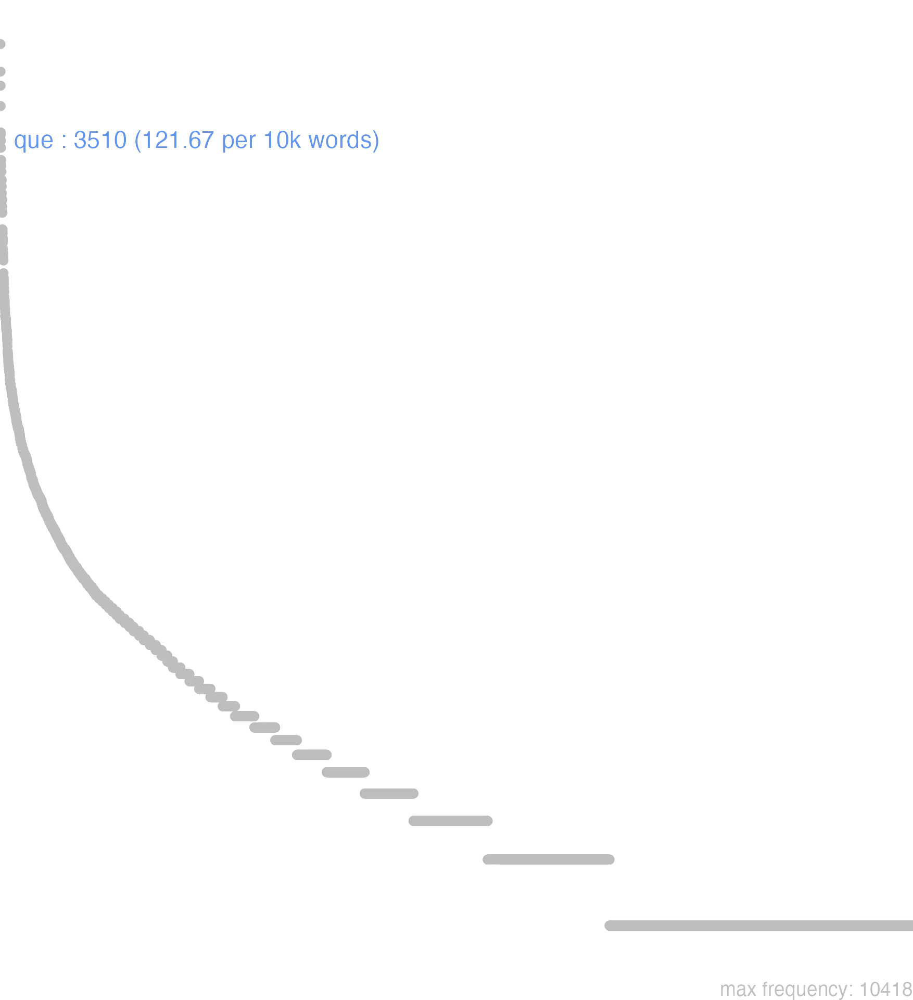

140 que
140.0.0.1 bases lexicais
id: http://lila-erc.eu/data/id/lemma/131416
classe: conjunção coordenativa
paradigma: indeclinável
outras grafias:
variantes do lema:
no data
no data
no data
140.0.0.2 dicionários tradicionais
-que
conj. copulativa, enclítica = et.
Obs.: Partícula enclítica, ligando duas palavras ou membros de frase. Em geral, não se emprega depois de ab, ob, sub, apud, a, ad, mas: exque Cíc. Phil. 3, 38. Geralmente não se emprega depois de sic, tunc, nunc, huc, illuc, mas, raramente: hucque Tác. An. 13,37; tuncque Tác. An. 14, 15. Pode aparecer repetida: -que… -que Plaut. Rud. 369; Sal. B. Jug. 10. 2. Encontra-se também: -que … et em lugar de et … et Sal. B. Jug. 26, 1. Aparece: -que… atque Verg. G. 1, 182. A forma -qué alongada na cesura aparece em Verg. En. 3, 91.
conj. copulativa, enclítica = et.
Obs.: Partícula enclítica, ligando duas palavras ou membros de frase. Em geral, não se emprega depois de ab, ob, sub, apud, a, ad, mas: exque Cíc. Phil. 3, 38. Geralmente não se emprega depois de sic, tunc, nunc, huc, illuc, mas, raramente: hucque Tác. An. 13,37; tuncque Tác. An. 14, 15. Pode aparecer repetida: -que… -que Plaut. Rud. 369; Sal. B. Jug. 10. 2. Encontra-se também: -que … et em lugar de et … et Sal. B. Jug. 26, 1. Aparece: -que… atque Verg. G. 1, 182. A forma -qué alongada na cesura aparece em Verg. En. 3, 91.
1 E, também:
2 Isto é, a saber:
3 E mesmo Cés. B. Gal. 5, 14, 4.
4 E ao contrário oposição a uma negação Cíc. Tusc. 1. 71.
5 E também, semelhante v. itemque Cíc. Of. 3, 96.
[EXEMPLOS]
1
senatus populusque Romanus «o senado e o povo romano».
2
ad Rhenum finesque Germanorum contendere Cés. B. Gal. 1, 27, 4 ‘dirigir-se para o Reno, isto é, para o território dos germanos’.
no data
Que
conj.
conj.
1 Cic. e, ainda, tambem.
Que
Conj. postpositiva
Conj. postpositiva
1 e
no data
140.0.0.3 dados de corpus
![This chart plots collocate by scoreSUBST, for the headword que here are all the values plotted: collocate: ne; scoreSUBST: 0. collocate: is; scoreSUBST: 0. collocate: omnis; scoreSUBST: 0. collocate: magnus; scoreSUBST: 0. collocate: populus; scoreSUBST: 2. collocate: magis; scoreSUBST: 0. collocate: ceterus; scoreSUBST: 0. collocate: idem; scoreSUBST: 0. collocate: uester; scoreSUBST: 0. collocate: romanus; scoreSUBST: 0. collocate: item; scoreSUBST: 0. collocate: totus; scoreSUBST: 0. collocate: tam; scoreSUBST: 0. collocate: equitatus; scoreSUBST: 3. collocate: natura; scoreSUBST: 2. collocate: reliquus; scoreSUBST: 0. collocate: semper; scoreSUBST: 0. collocate: grauis; scoreSUBST: 0. collocate: fortuna; scoreSUBST: 2. collocate: iudicium; scoreSUBST: 2. collocate: exercitus; scoreSUBST: 1. collocate: ibi; scoreSUBST: 0. collocate: uultus; scoreSUBST: 2. collocate: ea; scoreSUBST: 0. collocate: copia; scoreSUBST: 2. collocate: suum; scoreSUBST: 2. collocate: seruo; scoreSUBST: 0. collocate: maiores; scoreSUBST: 2. collocate: defendo; scoreSUBST: 0. collocate: terra; scoreSUBST: 1. collocate: obtestor; scoreSUBST: 0. collocate: defensor; scoreSUBST: 2. collocate: centurio; scoreSUBST: 2. collocate: obses; scoreSUBST: 2. collocate: commeatus; scoreSUBST: 2. collocate: ratis; scoreSUBST: 2. collocate: monumentum; scoreSUBST: 2. collocate: fidus; scoreSUBST: 0. collocate: uersor; scoreSUBST: 0. collocate: infestus; scoreSUBST: 0. collocate: militia; scoreSUBST: 2. collocate: uexo; scoreSUBST: 0. collocate: dirimo; scoreSUBST: 0. collocate: turris; scoreSUBST: 2. collocate: cruciatus; scoreSUBST: 2. collocate: fatalis; scoreSUBST: 0. collocate: geminus; scoreSUBST: 0. collocate: mensa; scoreSUBST: 2. collocate: conatus; scoreSUBST: 2. collocate: testor; scoreSUBST: 0. collocate: penitus; scoreSUBST: 0. collocate: periculosus; scoreSUBST: 0. collocate: nex; scoreSUBST: 2. collocate: rumpo; scoreSUBST: 0. collocate: altitudo; scoreSUBST: 2. collocate: comitatus; scoreSUBST: 2. collocate: praemitto; scoreSUBST: 0. collocate: armo; scoreSUBST: 0. collocate: munitio; scoreSUBST: 2. collocate: coma; scoreSUBST: 2. collocate: cultus; scoreSUBST: 2](./Media/wordcloud__xx113-117-101xx__BY_collocate_scoreSUBST.webp)
![This chart plots collocate by scoreADJ, for the headword que here are all the values plotted: collocate: ne; scoreADJ: 0. collocate: is; scoreADJ: 0. collocate: omnis; scoreADJ: 0. collocate: magnus; scoreADJ: 2. collocate: populus; scoreADJ: 0. collocate: magis; scoreADJ: 0. collocate: ceterus; scoreADJ: 0. collocate: idem; scoreADJ: 0. collocate: uester; scoreADJ: 0. collocate: romanus; scoreADJ: 2. collocate: item; scoreADJ: 0. collocate: totus; scoreADJ: 0. collocate: tam; scoreADJ: 0. collocate: equitatus; scoreADJ: 0. collocate: natura; scoreADJ: 0. collocate: reliquus; scoreADJ: 0. collocate: semper; scoreADJ: 0. collocate: grauis; scoreADJ: 2. collocate: fortuna; scoreADJ: 0. collocate: iudicium; scoreADJ: 0. collocate: exercitus; scoreADJ: 0. collocate: ibi; scoreADJ: 0. collocate: uultus; scoreADJ: 0. collocate: ea; scoreADJ: 0. collocate: copia; scoreADJ: 0. collocate: suum; scoreADJ: 0. collocate: seruo; scoreADJ: 0. collocate: maiores; scoreADJ: 0. collocate: defendo; scoreADJ: 0. collocate: terra; scoreADJ: 0. collocate: obtestor; scoreADJ: 0. collocate: defensor; scoreADJ: 0. collocate: centurio; scoreADJ: 0. collocate: obses; scoreADJ: 0. collocate: commeatus; scoreADJ: 0. collocate: ratis; scoreADJ: 0. collocate: monumentum; scoreADJ: 0. collocate: fidus; scoreADJ: 2. collocate: uersor; scoreADJ: 0. collocate: infestus; scoreADJ: 2. collocate: militia; scoreADJ: 0. collocate: uexo; scoreADJ: 0. collocate: dirimo; scoreADJ: 0. collocate: turris; scoreADJ: 0. collocate: cruciatus; scoreADJ: 0. collocate: fatalis; scoreADJ: 2. collocate: geminus; scoreADJ: 2. collocate: mensa; scoreADJ: 0. collocate: conatus; scoreADJ: 0. collocate: testor; scoreADJ: 0. collocate: penitus; scoreADJ: 0. collocate: periculosus; scoreADJ: 2. collocate: nex; scoreADJ: 0. collocate: rumpo; scoreADJ: 0. collocate: altitudo; scoreADJ: 0. collocate: comitatus; scoreADJ: 0. collocate: praemitto; scoreADJ: 0. collocate: armo; scoreADJ: 0. collocate: munitio; scoreADJ: 0. collocate: coma; scoreADJ: 0. collocate: cultus; scoreADJ: 0](./Media/wordcloud__xx113-117-101xx__BY_collocate_scoreADJ.webp)
![This chart plots collocate by scoreVERBO, for the headword que here are all the values plotted: collocate: ne; scoreVERBO: 0. collocate: is; scoreVERBO: 0. collocate: omnis; scoreVERBO: 0. collocate: magnus; scoreVERBO: 0. collocate: populus; scoreVERBO: 0. collocate: magis; scoreVERBO: 0. collocate: ceterus; scoreVERBO: 0. collocate: idem; scoreVERBO: 0. collocate: uester; scoreVERBO: 0. collocate: romanus; scoreVERBO: 0. collocate: item; scoreVERBO: 0. collocate: totus; scoreVERBO: 0. collocate: tam; scoreVERBO: 0. collocate: equitatus; scoreVERBO: 0. collocate: natura; scoreVERBO: 0. collocate: reliquus; scoreVERBO: 0. collocate: semper; scoreVERBO: 0. collocate: grauis; scoreVERBO: 0. collocate: fortuna; scoreVERBO: 0. collocate: iudicium; scoreVERBO: 0. collocate: exercitus; scoreVERBO: 0. collocate: ibi; scoreVERBO: 0. collocate: uultus; scoreVERBO: 0. collocate: ea; scoreVERBO: 0. collocate: copia; scoreVERBO: 0. collocate: suum; scoreVERBO: 0. collocate: seruo; scoreVERBO: 2. collocate: maiores; scoreVERBO: 0. collocate: defendo; scoreVERBO: 1. collocate: terra; scoreVERBO: 0. collocate: obtestor; scoreVERBO: 2. collocate: defensor; scoreVERBO: 0. collocate: centurio; scoreVERBO: 0. collocate: obses; scoreVERBO: 0. collocate: commeatus; scoreVERBO: 0. collocate: ratis; scoreVERBO: 0. collocate: monumentum; scoreVERBO: 0. collocate: fidus; scoreVERBO: 0. collocate: uersor; scoreVERBO: 2. collocate: infestus; scoreVERBO: 0. collocate: militia; scoreVERBO: 0. collocate: uexo; scoreVERBO: 2. collocate: dirimo; scoreVERBO: 2. collocate: turris; scoreVERBO: 0. collocate: cruciatus; scoreVERBO: 0. collocate: fatalis; scoreVERBO: 0. collocate: geminus; scoreVERBO: 0. collocate: mensa; scoreVERBO: 0. collocate: conatus; scoreVERBO: 0. collocate: testor; scoreVERBO: 2. collocate: penitus; scoreVERBO: 0. collocate: periculosus; scoreVERBO: 0. collocate: nex; scoreVERBO: 0. collocate: rumpo; scoreVERBO: 2. collocate: altitudo; scoreVERBO: 0. collocate: comitatus; scoreVERBO: 0. collocate: praemitto; scoreVERBO: 2. collocate: armo; scoreVERBO: 2. collocate: munitio; scoreVERBO: 0. collocate: coma; scoreVERBO: 0. collocate: cultus; scoreVERBO: 0](./Media/wordcloud__xx113-117-101xx__BY_collocate_scoreVERBO.webp)
![This chart plots collocate by scoreADV, for the headword que here are all the values plotted: collocate: ne; scoreADV: 0. collocate: is; scoreADV: 0. collocate: omnis; scoreADV: 0. collocate: magnus; scoreADV: 0. collocate: populus; scoreADV: 0. collocate: magis; scoreADV: 2. collocate: ceterus; scoreADV: 0. collocate: idem; scoreADV: 0. collocate: uester; scoreADV: 0. collocate: romanus; scoreADV: 0. collocate: item; scoreADV: 3. collocate: totus; scoreADV: 0. collocate: tam; scoreADV: 1. collocate: equitatus; scoreADV: 0. collocate: natura; scoreADV: 0. collocate: reliquus; scoreADV: 0. collocate: semper; scoreADV: 2. collocate: grauis; scoreADV: 0. collocate: fortuna; scoreADV: 0. collocate: iudicium; scoreADV: 0. collocate: exercitus; scoreADV: 0. collocate: ibi; scoreADV: 2. collocate: uultus; scoreADV: 0. collocate: ea; scoreADV: 2. collocate: copia; scoreADV: 0. collocate: suum; scoreADV: 0. collocate: seruo; scoreADV: 0. collocate: maiores; scoreADV: 0. collocate: defendo; scoreADV: 0. collocate: terra; scoreADV: 0. collocate: obtestor; scoreADV: 0. collocate: defensor; scoreADV: 0. collocate: centurio; scoreADV: 0. collocate: obses; scoreADV: 0. collocate: commeatus; scoreADV: 0. collocate: ratis; scoreADV: 0. collocate: monumentum; scoreADV: 0. collocate: fidus; scoreADV: 0. collocate: uersor; scoreADV: 0. collocate: infestus; scoreADV: 0. collocate: militia; scoreADV: 0. collocate: uexo; scoreADV: 0. collocate: dirimo; scoreADV: 0. collocate: turris; scoreADV: 0. collocate: cruciatus; scoreADV: 0. collocate: fatalis; scoreADV: 0. collocate: geminus; scoreADV: 0. collocate: mensa; scoreADV: 0. collocate: conatus; scoreADV: 0. collocate: testor; scoreADV: 0. collocate: penitus; scoreADV: 2. collocate: periculosus; scoreADV: 0. collocate: nex; scoreADV: 0. collocate: rumpo; scoreADV: 0. collocate: altitudo; scoreADV: 0. collocate: comitatus; scoreADV: 0. collocate: praemitto; scoreADV: 0. collocate: armo; scoreADV: 0. collocate: munitio; scoreADV: 0. collocate: coma; scoreADV: 0. collocate: cultus; scoreADV: 0](./Media/wordcloud__xx113-117-101xx__BY_collocate_scoreADV.webp)
![This chart plots collocate by scoreFUNC, for the headword que here are all the values plotted: collocate: ne; scoreFUNC: 50. collocate: is; scoreFUNC: 0. collocate: omnis; scoreFUNC: 0. collocate: magnus; scoreFUNC: 0. collocate: populus; scoreFUNC: 0. collocate: magis; scoreFUNC: 0. collocate: ceterus; scoreFUNC: 0. collocate: idem; scoreFUNC: 0. collocate: uester; scoreFUNC: 0. collocate: romanus; scoreFUNC: 0. collocate: item; scoreFUNC: 0. collocate: totus; scoreFUNC: 0. collocate: tam; scoreFUNC: 0. collocate: equitatus; scoreFUNC: 0. collocate: natura; scoreFUNC: 0. collocate: reliquus; scoreFUNC: 0. collocate: semper; scoreFUNC: 0. collocate: grauis; scoreFUNC: 0. collocate: fortuna; scoreFUNC: 0. collocate: iudicium; scoreFUNC: 0. collocate: exercitus; scoreFUNC: 0. collocate: ibi; scoreFUNC: 0. collocate: uultus; scoreFUNC: 0. collocate: ea; scoreFUNC: 0. collocate: copia; scoreFUNC: 0. collocate: suum; scoreFUNC: 0. collocate: seruo; scoreFUNC: 0. collocate: maiores; scoreFUNC: 0. collocate: defendo; scoreFUNC: 0. collocate: terra; scoreFUNC: 0. collocate: obtestor; scoreFUNC: 0. collocate: defensor; scoreFUNC: 0. collocate: centurio; scoreFUNC: 0. collocate: obses; scoreFUNC: 0. collocate: commeatus; scoreFUNC: 0. collocate: ratis; scoreFUNC: 0. collocate: monumentum; scoreFUNC: 0. collocate: fidus; scoreFUNC: 0. collocate: uersor; scoreFUNC: 0. collocate: infestus; scoreFUNC: 0. collocate: militia; scoreFUNC: 0. collocate: uexo; scoreFUNC: 0. collocate: dirimo; scoreFUNC: 0. collocate: turris; scoreFUNC: 0. collocate: cruciatus; scoreFUNC: 0. collocate: fatalis; scoreFUNC: 0. collocate: geminus; scoreFUNC: 0. collocate: mensa; scoreFUNC: 0. collocate: conatus; scoreFUNC: 0. collocate: testor; scoreFUNC: 0. collocate: penitus; scoreFUNC: 0. collocate: periculosus; scoreFUNC: 0. collocate: nex; scoreFUNC: 0. collocate: rumpo; scoreFUNC: 0. collocate: altitudo; scoreFUNC: 0. collocate: comitatus; scoreFUNC: 0. collocate: praemitto; scoreFUNC: 0. collocate: armo; scoreFUNC: 0. collocate: munitio; scoreFUNC: 0. collocate: coma; scoreFUNC: 0. collocate: cultus; scoreFUNC: 0](./Media/wordcloud__xx113-117-101xx__BY_collocate_scoreFUNC.webp)
![This charts plots the frequency of lemma by author_Frequencies. The Vergilius subcorpus registers the highest normalized frequency, with the value of 484.56 and an absolute frequency of 251. The Ovidius subcorpus follows, with a normalized frequency of 389.5 and an absolute frequency of 227. the subcorpus with the least normalized frequency is Hieronymus with the normalized value of 33.7 and an absolute freqeuncy of 15. here are all the values: subcorpus: Caesar ; normalized frequency: 527 ; absolute frequency: 199.0331596042. subcorpus: Cicero ; normalized frequency: 1636 ; absolute frequency: 101.916224365204. subcorpus: Horatius ; normalized frequency: 215 ; absolute frequency: 190.924429446763. subcorpus: Ovidius ; normalized frequency: 227 ; absolute frequency: 389.498970487303. subcorpus: Phaedrus ; normalized frequency: 50 ; absolute frequency: 75.90708972218. subcorpus: Sallustius ; normalized frequency: 124 ; absolute frequency: 115.017159818199. subcorpus: Seneca ; normalized frequency: 431 ; absolute frequency: 80.4389615721991. subcorpus: Suetonius ; normalized frequency: 6 ; absolute frequency: 66.1521499448732. subcorpus: Tacitus ; normalized frequency: 28 ; absolute frequency: 96.1208376244422. subcorpus: Vergilius ; normalized frequency: 251 ; absolute frequency: 484.555984555985. subcorpus: Hieronymus ; normalized frequency: 15 ; absolute frequency: 33.7002920691979](./Media/barchart__xx113-117-101xx__lemma_BY_author_Frequencies.webp)
![This charts plots the frequency of lemma by genre_Frequencies. The Poesia.épica subcorpus registers the highest normalized frequency, with the value of 484.56 and an absolute frequency of 251. The Poesia.didática subcorpus follows, with a normalized frequency of 223.09 and an absolute frequency of 263. the subcorpus with the least normalized frequency is Prosa.ficcional with the normalized value of 33.7 and an absolute freqeuncy of 15. here are all the values: subcorpus: Prosa.histórica ; normalized frequency: 685 ; absolute frequency: 166.751868351226. subcorpus: Prosa.filosófica ; normalized frequency: 398 ; absolute frequency: 65.567288842029. subcorpus: Prosa.oratória ; normalized frequency: 1070 ; absolute frequency: 102.733478632397. subcorpus: Prosa.epistolográfica ; normalized frequency: 357 ; absolute frequency: 94.5971011420546. subcorpus: Poesia.lírica ; normalized frequency: 229 ; absolute frequency: 192.647429965509. subcorpus: Poesia.didática ; normalized frequency: 263 ; absolute frequency: 223.089320553058. subcorpus: Poesia.trágica ; normalized frequency: 242 ; absolute frequency: 210.215427380125. subcorpus: Poesia.épica ; normalized frequency: 251 ; absolute frequency: 484.555984555985. subcorpus: Prosa.ficcional ; normalized frequency: 15 ; absolute frequency: 33.7002920691979](./Media/barchart__xx113-117-101xx__lemma_BY_genre_Frequencies.webp)
![This charts plots the frequency of lemma by period_Frequencies. The I.a.C. subcorpus registers the highest normalized frequency, with the value of 128.79 and an absolute frequency of 2767. The I.a.C. subcorpus follows, with a normalized frequency of 128.79 and an absolute frequency of 2767. the subcorpus with the least normalized frequency is IV.d.C. with the normalized value of 33.7 and an absolute freqeuncy of 15. here are all the values: subcorpus: I.a.C. ; normalized frequency: 2767 ; absolute frequency: 128.787526181057. subcorpus: I.d.C. ; normalized frequency: 694 ; absolute frequency: 106.164907449901. subcorpus: II.d.C. ; normalized frequency: 34 ; absolute frequency: 89.0052356020942. subcorpus: IV.d.C. ; normalized frequency: 15 ; absolute frequency: 33.7002920691979](./Media/barchart__xx113-117-101xx__lemma_BY_period_Frequencies.webp)
populus que iure sciuit
Cic.Phil.1.26.4
e o povo por direito ficou sabendo.” [JDD]
uirtutem eorum diligentiam que cognoscite
Cic.Cael.63
Conhecei o valor e a diligência deles. [JDD]
eum locum uallo fossa que muniuit
Caes.Gal.3.1.6
Fortificou esse local com paliçada e fossos. [JDD]
totius theatri clamore dixit item que cetera
Cic.Att.2.19.3
disse, com o clamor de todo o teatro, e também o resto. [JDD, de outra edição]
ne que id a Clodio praetermissum est
Cic.Att.3.23.4
E isso não foi deixado de lado por Clódio. [JDD, de outra edição]
pecudibus istas maiores feris que natura concessit
Sen.Ep.124.22
A natureza as concedeu maiores aos gados e às feras. [JDD]
sed iam exhibeo pupillum ne que defendo
Cic.Att.5.18.4
Mas já estou apresentando-o como pupilo e não o defendo. [JDD]
militiae uacationem omnium que rerum habent immunitatem
Caes.Gal.6.14.1
têm isenção do serviço militar e imunidade de todas os encargos. [JDD]
colit impense femina uir que numen geminum
Sen.Ag.398
Suntuosamente mulher e homem cultuam a divindade dos gêmeos. [JDD]
itaque se sua que omnia Caesari dediderunt
Caes.Gal.3.16.3
E assim entregaram a César a si e a todas as suas coisas. [JDD]
quibus fortiter resistentibus uineas turres que egit
Caes.Gal.3.21.2
Resistindo esses bravamente, ele fez parapeitos e torres. [JDD]
si ne que leges ne que mores cogunt
Cic.Att.2.19.3
“Se nem as leis nem os costumes te constrangem” [JDD, de outra edição]
stat grauis strages premitur que iuncto funere funus
Sen.Oed.131
O terrível morticínio continua e um funeral se espreme junto a outro funeral. [JDD]
iam nunc fingunt responsa Antoni ea que defendunt
Cic.Phil.7.2.1
Já agora inventam respostas de Antônio e as defendem. [JDD]
suspectum semper inuisum que dominantibus qui proximus destinaretur
Tac.Hist.1.21.6
Que era sempre suspeito e odioso para os governantes aquele que estava destinado a ser o próximo. [JDD]
occulta enim fuit eorum uoluntas iudicium que de Antonio
Cic.Phil.7.21.9
Pois a disposição e julgamento desses acerca de Antônio ficaram velados. [JDD]
leguntur eadem ratione ad senatum Allobrogum populum que litterae
Cic.Catil.3.11.1
Do mesmo modo é lida a carta ao senado e ao povo dos alóbroges. [JDD]
inuite loquere gnate quo auertis caput uacuos que uultus
Sen.Oed.1011
Mesmo contra a vontade, fala, filho: para onde viras a cabeça e as órbitas vazias? [JDD]
ergo post que magis que uiri nunc gloria claret
Cic.Sen.10
Portanto agora a glória do homem brilha sempre mais.” [JDD]
itaque nunc uos omnis oro atque obtestor hortor que
Cic.Rab.Perd.35
E assim agora vos peço e suplico e exorto a todos. [JDD]
deflexit iam aliquantum de spatio curriculo que consuetudo maiorum
Cic.Amici.40
Os costumes dos nossos antepassados já se desviou um tantinho da pista e da corrida. [JDD]
non sine magno quidem rei publicae prouinciae que Siciliae detrimento
Cic.Ver.2.4.20.7
Na verdade, não sem um grande dano à república e à província da Sicília. [JDD]
popularis uero tribunus pl. custos defensor que iuris et libertatis
Cic.Rab.Perd.12
Mas o tribuno da plebe é homem do povo, guardião e defensor do direito e da liberdade! [JDD]
ne que adhuc res confecta est sed voluntas senatus perspecta
Cic.Att.1.17.9
Nada foi feito ainda, mas a vontade do senado está clara. [JDD, de outra edição]
hos subsecuti equites calones que eodem impetu militum uirtute seruantur
Caes.Gal.6.40.5
Os criados e os cavaleiros, seguindo-os com o mesmo ímpeto, são salvos pela coragem dos soldados. [JDD, de outra edição]
pallida Mors aequo pulsat pede pauperum tabernas regum que turris
Hor.Carm.1.4.13
A pálida morte bate com pé igual as choupanas dos pobres e as torres dos reis. [JDD]
ius bonum que apud eos non legibus magis quam natura ualebat
Sal.Cat.9.1
o direito e o bem tinham valor entre eles menos por efeito das leis do que pela natureza. [JDD]
eadem est feminae maris que natura eadem forma magnitudo que cornuum
Caes.Gal.6.26.3
A natureza da fêmea e do macho é a mesma, e são os mesmos a forma e o tamanho dos chifres. [JDD]
exempli causa paucos nominaui genus infinitum immanitatem que ipsi cernitis reliquorum
Cic.Phil.13.2.16
Mencionei uns poucos a título de exemplo, vós próprios distinguis a raça inumerável e a monstruosidade dos restantes. [JDD]
o clementiam admirabilem atque omnium laude praedicatione litteris monumentis que decorandam
Cic.Lig.6
Ó clemência admirável e que deve ser consagrada pelo louvor de todos, pela publicidade, pelas letras e pelos monumentos! [JDD]
itaque a populo Romano contemnimur despicimur graui diuturna que iam flagramus infamia
Cic.Ver.1.43
E assim somos desdenhados, menosprezados pelo povo romano; já ardemos em uma grave e prolongada infâmia. [JDD]
auctoritate enim senatus consensu que populi Romani facile hominis amentis fregissemus audaciam
Cic.Phil.3.2.9
Pois, com a autoridade do senado e o consenso do povo romano, facilmente teríamos destroçado a audácia de um homem louco. [JDD]
transit Aiacem et ratem ratis que partem se cum et Aiacem tulit
Sen.Ag.537
Atravessou Ájax e seu barco e levou consigo parte do barco e de Ájax. [JDD, de outra edição]
et diluculo valde surgens egressus abiit in desertum locum ibi que orabat
Vulg.Marc.1.35
E levantando-se muito cedo, saiu e foi para um local deserto e ali orava. [JDD]
his rebus celeriter magna multitudine peditatus equitatus que coacta ad castra uenerunt
Caes.Gal.4.34.6
Por essas coisas, reunida rapidamente uma grande quantidade de infantaria e de cavalaria, vieram ao acampamento. [JDD]
sulcata uibrant aequora et latera increpant dirimunt que canae caerulum spumae mare
Sen.Ag.440
As águas sulcadas vibram e os flancos rangem e as brancas espumas dividem o mar azul. [JDD]
in his gregibus omnes aleatores omnes adulteri omnes impuri impudici que uersantur
Cic.Catil.2.23.1
Nestes rebanhos figuram todos os jogadores, todos os adúlteros, todos os impuros e os sem-vergonha. [JDD, de outra edição]
his rebus cognitis exploratores centuriones que praemittit qui locum castris idoneum deligant
Caes.Gal.2.17.1
Conhecidas essas coisas, envia na frente batedores e centuriões para que escolham um local adequado para o acampamento. [JDD, de outra edição]
armis obsidibus que acceptis Crassus in fines Uocatium et Tarusatium profectus est
Caes.Gal.3.23.1
Recebidas as armas e os reféns, Crasso partiu para as fronteiras dos vocates e tarusates. [JDD]
perrumpere nituntur se que ipsi adhortantur ne tantam fortunam ex manibus dimittant
Caes.Gal.6.37.10
Esforçam-se por penetrar violentamente e eles próprios exortam a si a não deixar escapar de suas mão tão grande fortuna. [JDD]
aegre portas nostri tuentur reliquos aditus locus ipse per se munitio que defendit
Caes.Gal.6.37.5
Penosamente guardam os nossos as portas, os acessos restantes o próprio local por si mesmo e a fortificação defendem. [JDD]
postquam prima quies epulis mensae que remotae crateras magnos statuont et uina coronant
Verg.A.1.723
Após o primeiro descanso no banquete e as mesas retiradas, dispõem grandes taças e coroam os vinhos. [JDD]
sic omnibus hostium copiis fusis armis que exutis se intra munitiones suas recipiunt
Caes.Gal.3.6.3
Assim, dispersas todas as tropas dos inimigos e abandonadas suas armas, [os nossos] se recolhem ao acampamento e suas fortificações. [JDD, de outra edição]
ubi socordiae te atque ignauiae tradideris nequiquam deos implores irati infesti que sunt
Sal.Cat.52.29
Quando te entregas à indolência e à ignávia, imploras inutilmente aos deuses: eles ficam irados e hostis. [JDD, de outra edição]
instruite nunc Quirites contra has tam praeclaras Catilinae copias uestra praesidia uestros que exercitus
Cic.Catil.2.24.3
Preparai agora, Quirites, contra estas tão ilustres tropas de Catilina, as vossas guarnições e os vossos exércitos. [JDD]
iam caelum terram que meo sine numine uenti miscere et tantas audetis tollere moles
Verg.A.1.133
Já ousais, ó ventos, misturar o céu e a terra e levantar tão grandes massas, sem meu consentimento? [JDD]
Tiberium quidem Gracchum rem publicam uexantem a Q. Tuberone aequalibus que amicis derelictum uidebamus
Cic.Amici.37
Víamos, na verdade, que Tibério Graco, que abalava a república, foi abandonado por Quinto Tuberão e seus amigos coetâneos. [JDD, de outra edição]
ut potestas maior absit nemo non seruus habet in te uitae necis que arbitrium
Sen.Ep.4.8
mesmo que não exista um poder maior, qualquer escravo tem sobre ti o arbítrio de vida e de morte. [JDD]
vidi enim vidi penitus que perspexi in meis variis temporibus et sollicitudines et laetitias tuas
Cic.Att.1.17.6
Pois vi, sim, vi e constatei profundamente em meus vários momentos as tuas inquietudes e alegrias. [JDD, de outra edição]
illi supplicia cruciatus que Gallorum ueriti quorum agros uexauerant remanere se apud eum uelle dixerunt
Caes.Gal.4.15.5
Eles, temendo os suplícios e as torturas dos gauleses, cujos campos tinham devastado, disseram que queriam permanecer com ele. [JDD]
140.0.0.4 Diagrama de Zipf
